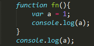
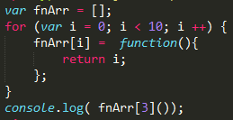
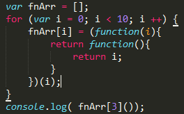

要正确的理解闭包首先就要理解js的作用域
JS作用域
在JavaScript中，块状代码段（比如for循环这种）不会形成作用域，只有函数才能生成自己的作用域，在其中声明的变量或函数在函数外部不可访问示例如下

会发现除了调用函数fn能够显示a=1外，在函数外部a是undefined，是不可调用的，同理，如果在函数fn中声明另一个函数fn1,这个函数在外部也是不能被访问到的，因为它们都是函数fn的局部变量。
通常说到局部变量，大家都有的认知是全局下不可访问，但为什么全局下不可访问呢？因为局部变量是只要在函数内部没有再用的可能性，就会被扔掉，不会保留其内存，这个具体会在下一小节的一个典型demo中进行解释。
闭包
闭包的作用就是让我们可以操作其他函数的内部变量，常见使用场景是将闭包作为函数的内部函数，然后return出我们想要访问的数据或对象。看这个demo：

发现不论索引是多少，输出的结果都是10，而不是我们本来想要的i。下面我们来具体分析下为什么：
- 这段代码的意思是，数组fnArr中的每个对象都是一个函数，这个函数将返回i值;
- 这个函数只执行一步有关i的操作后，后续就什么都不做了，也就是刚才所说的，在函数内部，i没有再被使用的可能性，所以函数会将i=0丢弃；
- 直到i++到10，这个时候for循环不再执行，相当于声明了var i = 10, 函数能访问到的i值就是10，所以才会出现上述结果。
要怎么利用闭包解决这个问题呢？我们想让函数存储i这个变量，就必须要保证它有可能被使用，如下：
